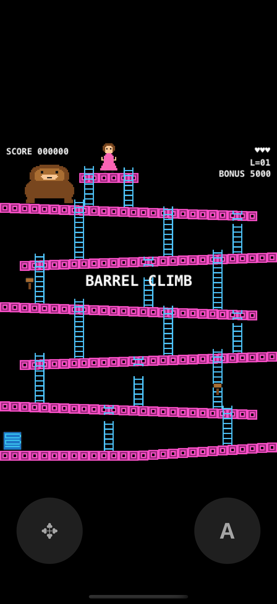
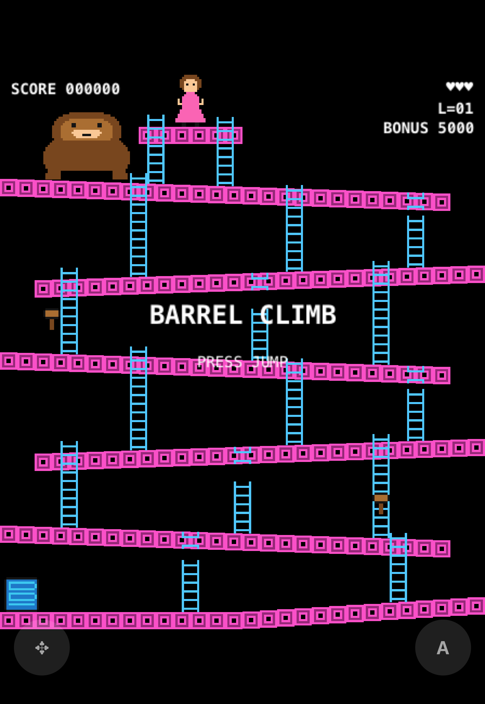
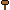

Barrel Climb
Six sloping girders, a rain of barrels, one hammer and a rescue at the top. An original arcade platformer for your Mac and your iPhone — including the iPhone Duo, folded or open.
What it looks like


How it plays
| Action | Mac | Controller | iPhone |
|---|---|---|---|
| Walk, climb | Arrow keys or WASD | D-pad or left stick | Left pad |
| Jump, start | Space | A | Right button |
Barrels roll down every girder and pick a ladder at random. Jump one for 100 points; touch one and you lose a life.

Two hammers hang on the way up. Nine seconds of swinging, 300 a barrel — but you can't jump or climb while you hold it.
Every eighth barrel is blue. Let it reach the oil drum and a fireball climbs out to hunt you.
Ladders are a refuge from barrels while you're on them — except the broken ones, which stop halfway.
Reach the top before the bonus runs out. Then it all starts again, faster.
Under the hood
The game is a pure function
- The whole simulation is a Swift package with no UI imports — not even a clock.
- It advances in fixed 1/60 s steps from an input struct and a seeded random source.
- Every rule above is pinned by one of 70 deterministic tests that run in under a second, no simulator needed.
The screen just mirrors it
- One SpriteKit scene, 224 × 256 logical points, scaled to fit any screen — that single setting is the entire foldable-phone support.
- One Xcode target for macOS and iOS, generated from a 70-line YAML file.
- All sprites and sounds are original and generated by two small Python scripts in the repo.
Build it
You need Xcode 27 and XcodeGen. No signing setup, no accounts.
git clone https://github.com/vincentlauriat/barrel-climb.git
cd barrel-climb
make run-mac # opens the game on your MacFor the iPhone Simulator, make build-ios then install the app from build/DerivedData — the exact commands are in the README. Running on your own iPhone means opening the generated project in Xcode and picking your team.
make test # the 70 simulation tests
make sprites sounds # regenerate the art and audio